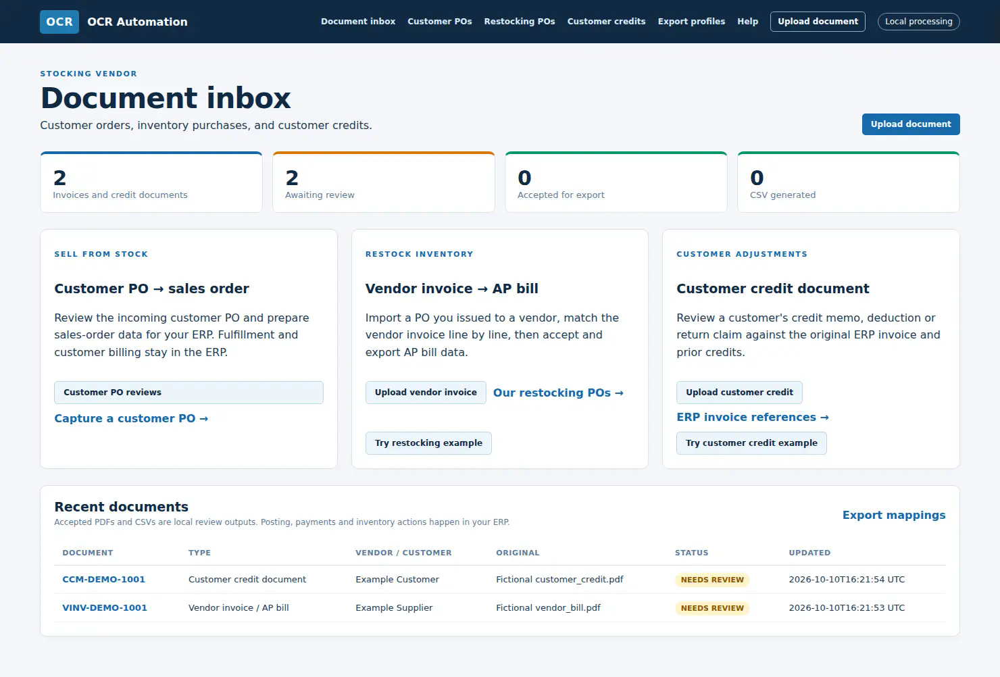
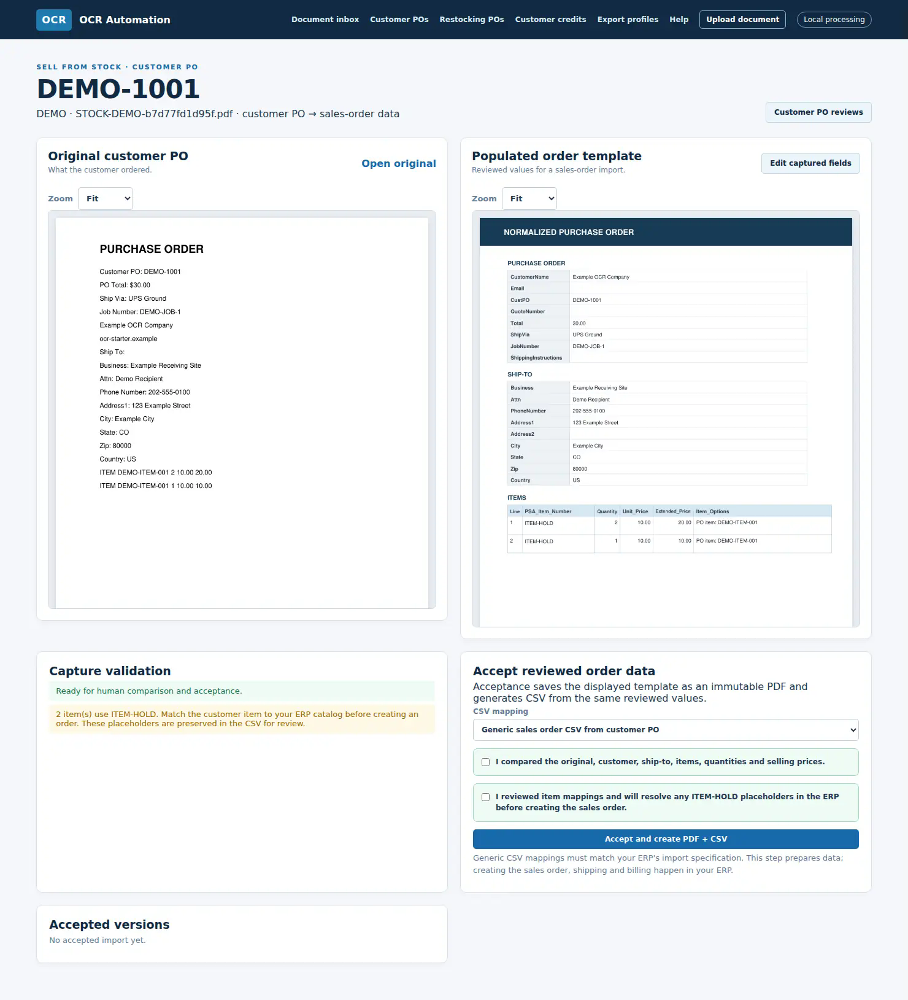
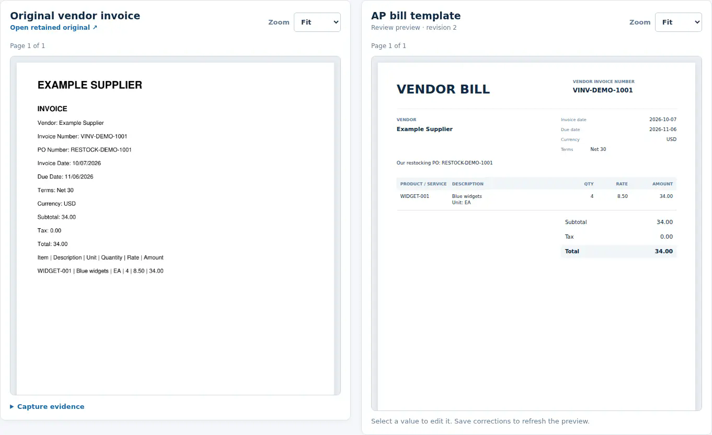
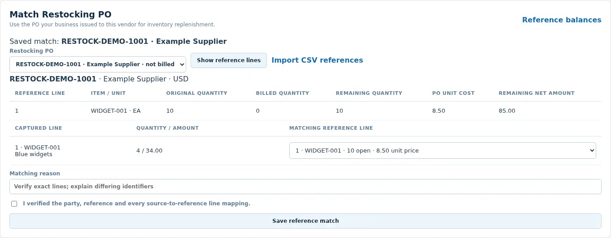
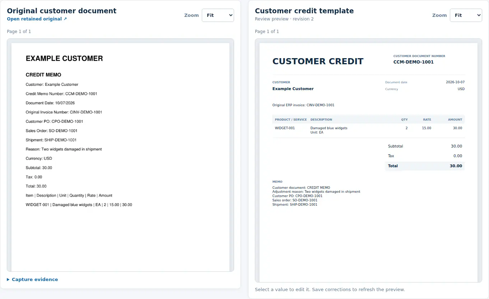
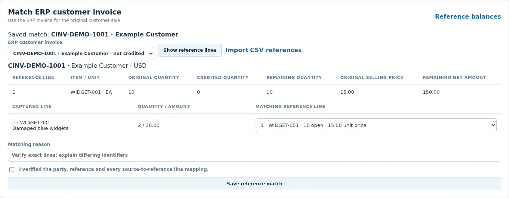
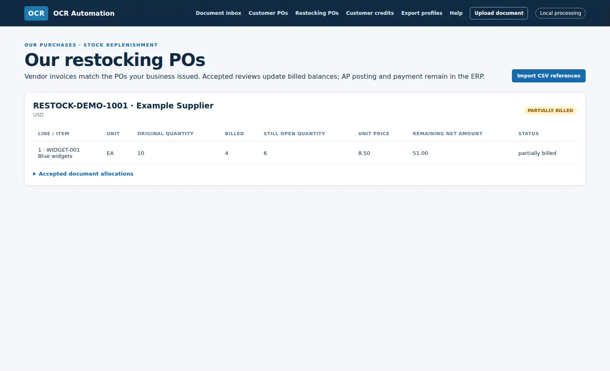
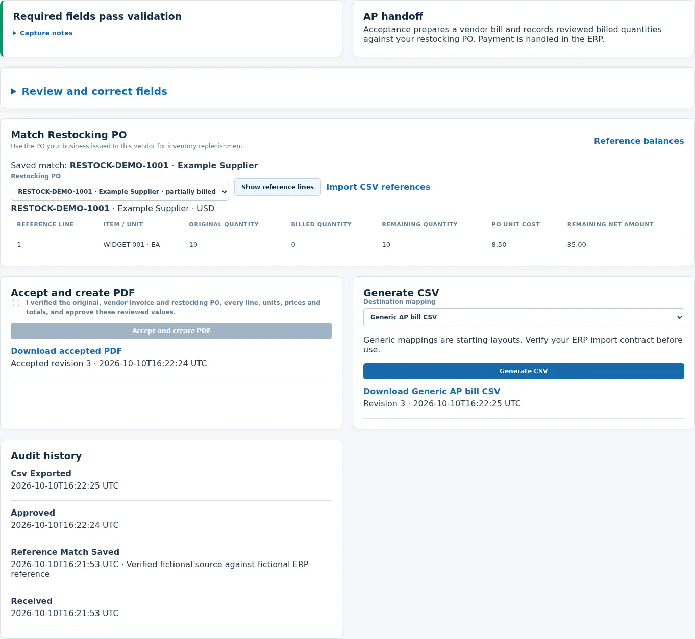

Document intelligence & ERP preparation
OCR Automation
A local document inbox that turns customer purchase orders, vendor invoices, and customer credit documents into reviewed, structured outputs. Each path retains the source, compares it with a populated template and its business reference, then requires an explicit acceptance before a PDF or CSV is released.
- Role
- Workflow designer, application developer, data normalization architect
- Platform
- Python, FastAPI, SQLite, PyMuPDF, ReportLab, OCR support
- Evidence
- Current app run locally from a clean-room source export with fictional documents and references

The operational problem
A readable document is not yet a safe ERP transaction.
Business documents arrive in different formats and refer to different records. A customer PO must become sales-order data, a supplier invoice must be checked against the PO the business issued, and a customer credit must be limited by the original sale and prior credits. Sending captured text straight to the ERP would hide errors in quantities, prices, line identity, and remaining balances.
The inbox makes those distinctions explicit. The operator sees the original beside the proposed output and the matching reference before accepting a local handoff file.
Three review paths
One intake, different evidence for each decision.
- Customer PO → sales order: compare the original order with a normalized template, correct captured values, and review item mappings. Accepted values create a PDF and sales-order CSV. Unresolved items stay at ITEM-HOLD for ERP catalog resolution.
- Vendor invoice → AP bill: import an issued restocking PO, retain and review the supplier invoice, match each invoice line to the PO, and check vendor, currency, quantity, unit cost, totals, and remaining balance. Acceptance prepares a bill PDF; a separate action generates an AP CSV.
- Customer credit document: retain the customer's credit memo, deduction, or return claim; compare it to a proposed credit and the original ERP customer invoice. Prior credited quantities, net amounts, and tax restrict what can be accepted. A reviewed credit PDF and CSV are local outputs.
Current application screens
The source and its reference stay visible.
These screenshots come from the running clean-room application and its fictional example buttons. Open the interactive walkthrough for the full nine-stage sequence.





Approval and audit
Acceptance changes local balances only after review.
Saving a candidate or proposed match does not consume a reference balance. Acceptance checks it again inside a database transaction. In the fictional bill example, four of ten PO units become locally billed, leaving six units and $51 open. In the fictional credit example, two of ten sold units become locally credited, leaving eight units and $120 open.
Correcting an accepted document clears its current match and requires another review and acceptance. Earlier PDFs, CSVs, and audit events remain available. Duplicate accepted document numbers are blocked. The displayed balances represent local reviewed documents and imported opening ERP balances; they do not confirm that an export was imported by the ERP.
Controlled handoff
PDF and CSV output with a visible history.


ERP boundary
Reviewed files are ready for a mapped importer.
Export profiles configure column names, source fields, order, dates, delimiter, and encoding. Generic layouts are available for sales orders, AP bills, and customer credits. A retained QuickBooks customer-invoice mapping belongs to an earlier prototype and does not establish QuickBooks bill or credit import support.
The application does not post bills, pay vendors, ship goods, issue refunds, or update inventory in the ERP. Each destination's import contract must be verified before the corresponding CSV is used. Direct accounting API writes, receipt matching, and email intake are future work.
Verification
Inspected from the current source package.
I ran the uploaded clean-room build locally, opened each fictional path, accepted and exported the vendor bill and customer credit examples, and inspected the resulting reference balances and audit history. The portfolio images are captures of that running application, not recreated mockups. The customer PO example was reviewed as the current comparison screen.
The uploaded source export contains no production customer documents or runtime records. Its standalone README identifies a planned Windows server deployment; this review used the local app and does not claim a live hosted service.
Portfolio note